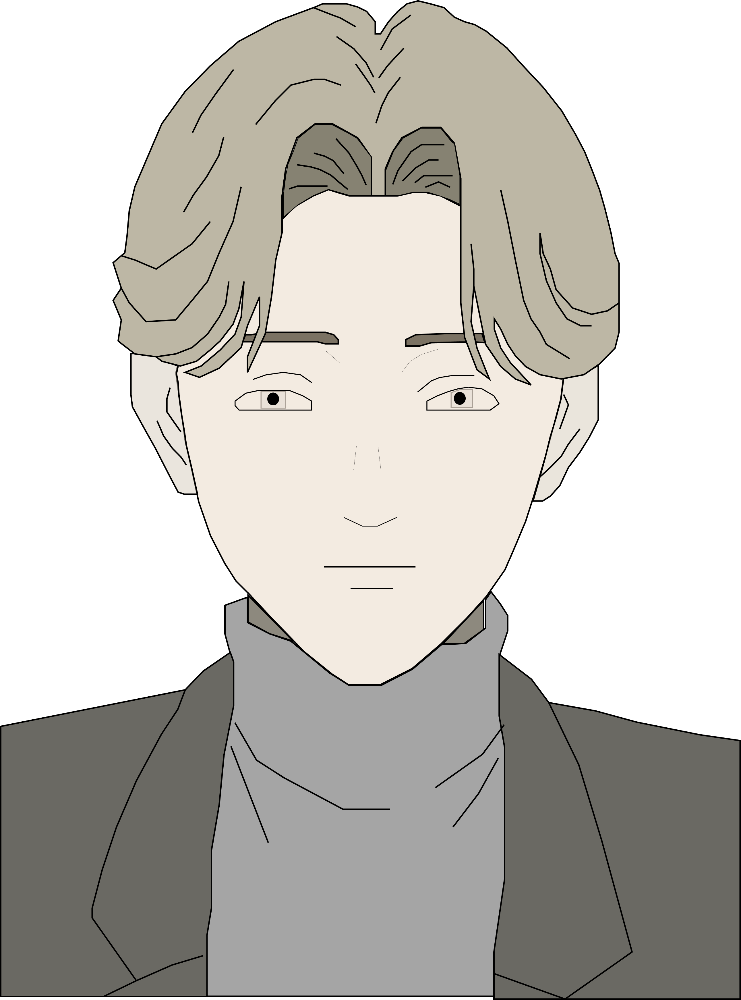

Johan Liebert
Often praised as one of the best villans in anime, Johan Liebert from "Monster" is a mystery and has a strong presence throughout the show. He is a brilliant, angelic and strategic villan who commits many murders throughtout the show by masterfully manipulating his victims. As Johan is committing these murders, he is pursued by Dr.Tenma(the surgeon that saved his life when he was younger) and his long lost twin sister to put a stop to his murders.
